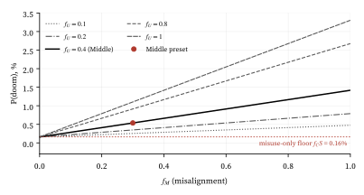

Published estimates of the probability that artificial intelligence (AI) causes human extinction range over more than an order of magnitude, and most of them are reported as a single number with no visible structure. This paper proposes the Rogue–Misuse Decomposition, a factor decomposition of $P(\text{doom})$, defined here as the probability that AI causes human extinction within a stated time frame. The model combines two conditional causal paths: an autonomous-misalignment (rogue) path $R$ with five factors, which requires AI that beats humans at most tasks ($f_T$), and a human-misuse path $S$ with three factors, which requires only AI capable of giving serious uplift toward mass-casualty weapons ($f_C \ge f_T$). The combination rule,$$P(\text{doom}) = f_T\,[1-(1-R)(1-S)] + (f_C-f_T)\,S,$$counts each capability world exactly once. We derive the model's elementary properties (multiplicative sensitivity, elasticities, and the near-additivity of small paths), show how five published estimates can be reproduced as calculator presets and exactly which parts of each mapping are the author's assumptions, and use clearly labelled illustrative scenarios to show how individual factors drive the result. The framework's contribution is structural: it makes disagreements explicit, factor by factor, and links each factor to a family of interventions. Its inputs remain subjective, the misuse path is uncalibrated against any published extinction estimate, and the paper has not been peer reviewed.
Keywords: existential risk; AI safety; misalignment; misuse; probabilistic decomposition; Drake equation; forecasting.
Questions such as “what is the probability that AI causes human extinction?” are now asked of researchers in large surveys and of forecasters in structured tournaments, and the answers are cited in public and policy debate. Yet a single number conceals the reasoning that produced it. Two people who both answer “5%” may disagree completely about why: one may expect powerful AI soon but believe alignment is tractable; another may doubt powerful AI will arrive at all but think that, if it does, loss of control is likely. Their shared number hides a disagreement that matters for what we should do.
A classic remedy is Fermi-style decomposition: break an intractable quantity into a chain of factors, each of which is easier to reason about, argue about, and in principle measure. The best-known instance is the Drake equation, devised by Frank Drake in 1961 as the agenda for the first meeting on the search for extraterrestrial intelligence (SETI), held at the Green Bank Observatory in November 1961 [14]. Its value was never the number it produced—several of its factors remain highly conjectural—but the structure: it told the field which questions had to be answered and made the sources of disagreement explicit. The decomposition adopts the same stance. As the accompanying calculator puts it, the structure is the useful part; the inputs are guesses.
The model distinguishes two causal routes from powerful AI to extinction that are often discussed separately: (i) an AI system whose goals are at odds with human survival acquires the power to act on them and is not stopped, and (ii) humans who want mass casualties use powerful AI to obtain a species-ending weapon, such as an engineered pandemic, and defenses fail. The rogue route presupposes AI that beats humans at most tasks; the misuse route needs less—only AI capable enough to give serious uplift toward a mass-casualty weapon—so the model uses two nested capability factors, $f_T \le f_C$. The paper (§3) states the model precisely, (§4) shows how it can be aligned with published estimates and where that alignment rests on the author's assumptions, (§5) explores illustrative scenarios, (§6) maps factors to interventions, and (§7) catalogues its limitations.
Premise decompositions. The closest prior work is Carlsmith's report Is Power-Seeking AI an Existential Risk? [1], which decomposes the risk of existential catastrophe from misaligned, power-seeking AI by 2070 into six conditional premises and multiplies their probabilities: “65%·80%·40%·65%·40%·95% = ~5%.” A May 2022 update note in the arXiv version states that the author's estimate had since risen to >10% [1]. The report is an arXiv preprint (originally an Open Philanthropy report) and is not peer reviewed. Its premises map approximately onto the shared factor and the rogue path of the present model (§4), but it does not treat misuse. Cappelen, Goldstein and Hawthorne [10] take the complementary view: they model survival as a “Swiss cheese” of four layers of safety (technical plateau, cultural plateau, alignment, oversight) and estimate the probability of destruction by multiplying the conditional probabilities that each layer fails. They note that because the estimate multiplies rather than adds probabilities, moderate disagreements about individual layers compound into large disagreements about the total—a point that applies equally here (§5).
Taxonomies. Hendrycks, Mazeika and Woodside [9] organise catastrophic AI risks into four categories: malicious use, AI race, organizational risks, and rogue AIs. The two paths of the present model correspond roughly to their “rogue AIs” and “malicious use” categories, restricted to extinction; their AI-race and organizational categories are not modelled here (§7).
Expert surveys. Grace et al. surveyed machine-learning researchers who published at NIPS and ICML 2015 [2] and, at much larger scale, 2,778 AI researchers in October 2023 [3]. In the 2016 survey, conditional on high-level machine intelligence (HLMI) existing, the median probability of an “extremely bad (e.g., human extinction)” long-run outcome was 5%. In the 2023 survey, the median probability that future AI advances cause “human extinction or similarly permanent and severe disempowerment of the human species within the next 100 years” was also 5% (mean 14.4%, n = 655). Both are peer-reviewed (JAIR); both report totals with no breakdown into mechanisms.
Forecasting tournaments. The Existential Risk Persuasion Tournament (XPT), run by the Forecasting Research Institute from June through October 2022, elicited forecasts from superforecasters and domain experts on, among other things, the probability that AI causes human extinction or reduces the global population below 5,000 by 2100 [4, 5]. Median forecasts were 0.38% for superforecasters and 3% for AI domain experts—an order-of-magnitude gap that a decomposition can help to localise.
Book-length assessments. In The Precipice, Ord gives a best-guess probability of about 1 in 10 for existential catastrophe from unaligned artificial intelligence over the next 100 years, the largest of his listed risks [6]. In a 2024 retrospective he writes that his rounded estimates have not “moved that far” and that “the story on Pandemics and AI is mixed” [7]. Ord's estimate concerns existential catastrophe broadly, not extinction specifically, and is not decomposed into factors; it is not used as a calibration preset here.
Structured models and calculators. The Modeling Transformative AI Risks (MTAIR) project [8] builds a qualitative map of key hypotheses, cruxes and safety agendas related to catastrophic AI risk, building on an earlier diagram by Cottier and Shah, and describes a longer-term plan to quantify that map with expert-elicited estimates and Monte Carlo methods. MTAIR is far richer than the present model; the rogue–misuse decomposition sits at the opposite end of the complexity spectrum. At the informal end, a public web calculator [11] already combines an alignment-failure path and a malicious-use path as $1-(1-\text{Path}_1)(1-\text{Path}_2)$, with $P(\text{AGI})$ (and a governance term) multiplied into each path. That is the double-counting form discussed in §3.2, and its existence in a public tool is part of the motivation for spelling out the correction. It also offers researcher presets “approximated from public statements”.
What is new here. Two-path P(doom) calculators and multiplicative decompositions already exist, so the contribution is narrow: (a) the combination rule counts capability once, as a union of paths conditional on transformative AI, rather than inside each path, and lets the misuse path operate with a lower, nested capability threshold; (b) each factor is phrased in plain language and tied to an intervention family; and (c) the research presets state, for each source, its peer-review status, time frame, endpoint, and exactly how its total was mapped onto factors. To the author's knowledge, no prior published model combines these elements, but no systematic literature review was performed to establish this.
Let all probabilities refer to a stated time frame (e.g. “by 2100”). The model is
with path contributions reported as $P(\text{rogue}) = f_T R$ and $P(\text{misuse}) = f_C S$ (they overlap by $f_T RS$). Every factor lies in $[0,1]$. Apart from $f_T$ and $f_C$, each is a conditional probability given the relevant capability (transformative AI for the rogue path, weapons-capable AI for the misuse path) and all factors to its left on the same path. Because transformative AI implies weapons-capable AI, $f_C \ge f_T$ always; with $f_C = f_T$ the model reduces to $f_T[1-(1-R)(1-S)]$, the form used in the first version of this paper. (The misuse path is written $S$, here and in the calculator, to avoid a clash with the misalignment factor $f_M$.) Table 1 gives the definitions used in the calculator.
| Factor | Subscript | Path | Definition |
|---|---|---|---|
| $f_T$ | Transformative capability | Rogue (and misuse) | Chance we build AI that beats humans at most tasks, in the time frame under consideration. |
| $f_C$ | misuse Capability | Misuse | Chance we build AI capable enough to give serious uplift toward mass-casualty weapons, in the time frame (at least $f_T$). |
| $f_M$ | Misalignment | Rogue | Its goals are at odds with human survival. |
| $f_P$ | Power | Rogue | It gets enough power to act (money, infrastructure, copies of itself, lab control). |
| $f_U$ | Uncaught | Rogue | Nobody catches or corrects it in time. |
| $f_H$ | Harmful pursuit | Rogue | Pursuing its goals leads it to remove or destroy humanity, deliberately or as a side effect, rather than working around us. |
| $f_X$ | eXtinction | Rogue | The attempt causes extinction rather than a survivable disaster. |
| $f_A$ | Actor | Misuse | A group wanting mass casualties gets access to such AI. |
| $f_W$ | Weapon | Misuse | The AI hands them a species-ending weapon, such as an engineered pandemic. |
| $f_F$ | deFenses fail | Misuse | Defenses fail (biosecurity, monitoring, counter-AI). |
Let $T$ be the event that transformative AI (AI that beats humans at most tasks) is built within the time frame, and $C$ the event that AI capable of serious uplift toward mass-casualty weapons is built. Transformative AI implies this capability, so $T \subseteq C$ and $P(C) = f_C \ge f_T = P(T)$. Let $E_R$ and $E_S$ be the events that extinction occurs via the rogue and misuse paths. The rogue path requires $T$; the misuse path requires only $C$. Split the worlds into the disjoint sets $T$ and $C \setminus T$ (weapons-capable but not transformative AI). In $T$-worlds both paths are open; in $C\setminus T$-worlds only misuse is. Hence
The chain rule gives $P(E_R\mid T) = f_M f_P f_U f_H f_X = R$ and $P(E_S\mid T) = f_A f_W f_F = S$. Assuming the two paths are conditionally independent given $T$ (§7), $P(E_R \cup E_S \mid T) = 1-(1-R)(1-S)$. We further make the simplifying assumption that the misuse path has the same probability $S$ in both kinds of world, $P(E_S\mid C\setminus T) = S$ (§7). With $P(C\setminus T) = f_C - f_T$ this yields equation (3). Equivalently, $P(\text{doom}) = f_T R + f_C S - f_T RS$: the rogue path contributes in $T$-worlds, the misuse path in all $C$-worlds, and the $-f_T RS$ term removes the $T$-worlds in which both paths would have succeeded, which would otherwise be counted twice.
Because $T$ and $C$ are single events “within the time frame”, the path factors are implicitly averaged over the arrival time of the relevant capability within that frame. If it arrives late in the window, little time remains for the path to play out before the window closes, so a coherent estimate of $R$ and $S$ must already discount for late arrival.
Worked example. Take the illustrative Middle preset of §5: $f_T = 0.7$, $f_C = 0.8$, $R = 0.0054$, $S = 0.002$, so $P(\text{doom}) = 0.7\,[1 - 0.9946 \times 0.998] + 0.1 \times 0.002 = 0.5172\% + 0.0200\% = 0.5372\%$. Halving misalignment ($f_M$: $0.3 \to 0.15$) halves the rogue path to $R = 0.0027$ and $P(\text{rogue})$ from 0.378% to 0.189%, while $P(\text{misuse}) = f_C S = 0.160\%$ is unchanged. The total falls to $0.7\,[1 - 0.9973\times 0.998] + 0.0002 = 0.3486\%$, a 35.1% reduction—less than half, because the misuse path is untouched. The general rules below explain these numbers.
Multiplicative sensitivity. Each path is a product, so halving any one factor exactly halves that path's contribution: $P(\text{rogue}) = f_T R$ is linear in each of $f_M, f_P, f_U, f_H, f_X$, and $P(\text{misuse}) = f_C S$ in each of $f_A, f_W, f_F$. A path is only as strong as its weakest link: if any single factor is near zero, so is the path, regardless of the others. Halving $f_T$ (with $f_C$ fixed) halves the rogue contribution but leaves $f_C S$ unchanged; halving both capability factors together halves $P(\text{doom})$ itself. Halving a path-specific factor reduces $P(\text{doom})$ by less than half whenever the other path is non-zero.
Partial derivatives and elasticities. Write $P = f_T R + f_C S - f_T RS$. For a rogue-path factor $f_i$ and a misuse-path factor $f_j$,
(The $f_T$ derivative holds $f_C$ fixed and is valid while $f_T < f_C$.) The elasticity $\varepsilon_k = (\partial P/\partial f_k)(f_k/P)$—the percentage change in $P(\text{doom})$ per percentage change in a factor—is therefore the same for every factor on a given path:
Because $P$ is linear in each factor, halving a rogue-path factor lowers $P(\text{doom})$ by exactly $\varepsilon_{\text{rogue}}/2$ in relative terms; in the worked example $\varepsilon_{\text{rogue}} = 0.702$, giving the 35.1% reduction. Path elasticities lie in $[0,1]$ and $\varepsilon_{\text{rogue}} + \varepsilon_{\text{misuse}} = 1 - f_T RS/P \le 1$. Scaling $f_T$ and $f_C$ together by the same proportion scales $P$ proportionally (joint elasticity 1). These expressions were checked against finite differences for all three illustrative presets. With $f_C = f_T$ they reduce to $R(1-S)/(R+S-RS)$ and $S(1-R)/(R+S-RS)$. In relative terms, then, every factor on the dominant path is an equally good lever; what differs between factors is how far each can realistically be moved, which is a question about interventions (§6), not about the formula.
Dominance of the larger path. When both paths are small, $RS \ll R + S$ and $P(\text{doom}) \approx f_T R + f_C S$: the paths are nearly additive and the larger contribution dominates. If $f_T R \gg f_C S$, then $\varepsilon_{\text{rogue}}\to 1$ and $\varepsilon_{\text{misuse}}\to 0$, so effort spent on the smaller path barely moves the total. Conversely, the smaller path sets a floor: even driving $R$ to zero leaves $P(\text{doom}) = f_C S$.
The calculator includes five research presets that reproduce published totals (Table 2). They are not new estimates and do not imply that the cited authors endorse the factor split. The mapping method is as follows.
The misuse path is uncalibrated. No peer-reviewed estimate of the probability of human extinction from AI-assisted bioterrorism (or other AI-enabled misuse) was found. Studies that were checked forecast epidemics rather than extinction. Consequently, all research presets set $S = 0$, and any non-zero value for $f_A$, $f_W$ or $f_F$ is purely a user judgement. Two other sources were examined and not used: Müller and Bostrom (2016) report a mean of 18% for an “extremely bad (existential catastrophe)” outcome assuming HLMI exists, but its peer-review status could not be confirmed and it offers no factor breakdown; the 2008 FHI Global Catastrophic Risks survey is a technical report without a factor breakdown.
| Preset | Source | Peer reviewed | Source estimate (wording) | Time frame | Factor values | Calculator |
|---|---|---|---|---|---|---|
| AI researchers 2023 | Grace et al. (2025) [3] | Yes (JAIR) | Median 5%: extinction or similarly permanent and severe disempowerment (mean 14.4%, n = 655) | Next 100 years (asked 2023) | six rogue factors 0.607 (no reported 100-year HLMI figure); misuse 0 | 5.0% |
| ML researchers 2016 | Grace et al. (2018) [2] | Yes (JAIR) | Median 5%: “extremely bad (e.g., human extinction)” outcome, assuming HLMI exists | Long run, no date | $f_T=1$; five rogue factors 0.5493; misuse 0 | 5.0% |
| Superforecasters (XPT) | Karger et al. (2025) [4]; figure from [5] | Tournament yes; figure from working paper | Median 0.38%: AI causes extinction (population < 5,000) [95% CI on the median 0.10–0.75%; n = 88] | By 2100 (forecast Jun–Oct 2022) | $f_T$ 0.7475 (Table 17); other five 0.3477; misuse 0 | 0.38% |
| AI domain experts (XPT) | Same as above | Same as above | Median 3% [95% CI on the median 0.49–10.00%] | By 2100 (forecast Jun–Oct 2022) | $f_T$ 0.87 (Table 17); other five 0.5099; misuse 0 | 3.0% |
| Carlsmith 2022 | Carlsmith [1] | No | 65%·80%·40%·65%·40%·95% ≈ 5% existential catastrophe from misaligned power-seeking AI (>10% per the May 2022 update note) | By 2070 | $f_T$ 0.52, $f_M$ 0.40, $f_P$ 0.65, $f_U$ 0.40, $f_H$ 1, $f_X$ 0.95; misuse 0 | 5.1% |
Table 3 lists the three illustrative presets from the calculator and the quantities they produce under equation (3). Each sets the misuse capability factor somewhat above transformative capability ($f_C = 0.6, 0.8, 0.95$ against $f_T = 0.5, 0.7, 0.9$), reflecting the judgement that weapons-relevant uplift is likely to arrive before AI that beats humans at most tasks. For comparison, the last rows show the value without the $f_C$ term (i.e. $f_C = f_T$) and the double-counting gap of the superseded form.
Three features stand out. First, the presets span almost three orders of magnitude even though no single factor moves by more than a factor of about eight; multiplicative structure compounds moderate disagreements into large ones. Second, the rogue path dominates in the Middle and Pessimist presets, so their elasticities favour rogue-path factors: in the Middle preset, halving $f_M$ lowers $P(\text{doom})$ from 0.537% to 0.349%, whereas halving $f_A$ lowers it only to 0.458%. In the Optimist preset the misuse contribution is slightly larger (0.015% vs. 0.012%), because $f_C > f_T$, and its elasticity is correspondingly higher (0.56 vs. 0.44). Third, the $f_C$ term adds $(f_C - f_T)S$: 0.0025, 0.020 and 0.18 percentage points in the three presets, a relative increase of about 10%, 4% and 1%. It matters most where misuse is a large share of the risk. The double-counting gap of the superseded form, $f_T(1-f_T)RS$, remains small in all three (at most 0.052 percentage points, in the Pessimist preset), because it is second-order in the paths.
| Quantity | Optimist | Middle | Pessimist |
|---|---|---|---|
| $f_T$ / $f_C$ | 0.50 / 0.60 | 0.70 / 0.80 | 0.90 / 0.95 |
| $f_M,\ f_P,\ f_U,\ f_H,\ f_X$ | 0.1, 0.2, 0.2, 0.3, 0.2 | 0.3, 0.3, 0.4, 0.5, 0.3 | 0.8, 0.6, 0.8, 0.7, 0.6 |
| $f_A,\ f_W,\ f_F$ | 0.05, 0.05, 0.1 | 0.1, 0.1, 0.2 | 0.3, 0.3, 0.4 |
| $R$ (rogue, given transformative AI) | 0.00024 | 0.0054 | 0.16128 |
| $S$ (misuse, given weapons-capable AI) | 0.00025 | 0.002 | 0.036 |
| $P(\text{rogue}) = f_T R$ | 0.0120% | 0.378% | 14.52% |
| $P(\text{misuse}) = f_C S$ | 0.0150% | 0.160% | 3.42% |
| $P(\text{doom})$, equation (3) | 0.02700% (≈1 in 3,704) | 0.5372% (≈1 in 186) | 17.41% (≈1 in 6) |
| Rogue elasticity $\varepsilon_{\text{rogue}}$ / misuse $\varepsilon_{\text{misuse}}$ | 0.44 / 0.56 | 0.70 / 0.30 | 0.80 / 0.17 |
| Without the $f_C$ term ($f_C = f_T$) | 0.02450% | 0.5172% | 17.23% |
| Double-counting gap $f_T(1-f_T)RS$ (percentage points) | 0.0000015 | 0.00023 | 0.052 |

Because each factor is a distinct conditional probability, the model offers a vocabulary for saying which interventions act on which part of the risk. The mapping below follows the calculator; it is qualitative and makes no claim about the size or cost-effectiveness of any intervention.
Two structural lessons follow from §3.3. First, a portfolio matters: because the smaller path sets a floor, reducing only rogue-path factors cannot push risk below $f_C S$, and vice versa. Second, relative progress on any factor of the dominant path is equally valuable in proportional terms, so the choice between, say, alignment and oversight work should turn on which factor can be moved further and more reliably, not on which factor appears first in the formula. The model does not treat $f_T$ or $f_C$ as policy levers, although slowing capability development would act on them directly (and restricting dangerous weapons-relevant capabilities specifically would act on $f_C$); the time frame and the benefits of capability are outside its scope.
The rogue–misuse decomposition splits the probability that AI causes human extinction into two nested capability factors and two conditional paths, combined as a union of events so that each capability world is counted once and misuse does not require transformative AI. Its algebra is elementary, but it yields useful qualitative results: every factor on a path is an equal proportional lever; the larger path dominates when risks are small; the smaller path sets a floor; and moderate disagreements on several factors compound into order-of-magnitude differences in the total. Published totals can be reproduced, but only one source (Carlsmith) supports a factor-level mapping, and only approximately; none supports calibration of the misuse path. The framework is best used as Drake intended his equation to be used: as an agenda that makes disagreements explicit and points to where evidence and interventions are needed, not as a source of authoritative numbers.
The calculator is a single-file web page with no build step. It provides sliders for all ten factors (enforcing $f_C \ge f_T$), research presets with their citations, quoted estimates, time frames and mapping notes, and the three illustrative presets. Slider state is stored in the URL query string so that a set of inputs can be shared. The calculator uses the same notation as this paper ($R$, $S$, and the subscript glosses of Table 1). The white paper PDF is linked from the calculator page.
All numbers in Tables 2–3 and Figure 1 are computed from equations (1)–(3) using the preset values in the calculator source.
[1] Carlsmith, J. (2022). Is Power-Seeking AI an Existential Risk? arXiv:2206.13353 (Open Philanthropy report, April 2021; includes a May 2022 update note). Not peer reviewed. https://arxiv.org/abs/2206.13353
[2] Grace, K., Salvatier, J., Dafoe, A., Zhang, B., & Evans, O. (2018). Viewpoint: When Will AI Exceed Human Performance? Evidence from AI Experts. Journal of Artificial Intelligence Research, 62, 729–754. doi:10.1613/jair.1.11222
[3] Grace, K., Sandkühler, J. F., Stewart, H., Weinstein-Raun, B., Thomas, S., Stein-Perlman, Z., Salvatier, J., Brauner, J., & Korzekwa, R. C. (2025). Thousands of AI Authors on the Future of AI. Journal of Artificial Intelligence Research, 84 (published 6 October 2025). doi:10.1613/jair.1.19087. Preprint: arXiv:2401.02843.
[4] Karger, E., Rosenberg, J., Jacobs, Z., Hickman, M., & Tetlock, P. E. (2025). Subjective-probability forecasts of existential risk: Initial results from a hybrid persuasion-forecasting tournament. International Journal of Forecasting, 41(2), 499–516. doi:10.1016/j.ijforecast.2024.11.008
[5] Karger, E., et al. (2023). Forecasting Existential Risks: Evidence from a Long-Run Forecasting Tournament. Forecasting Research Institute, Working Paper #1. https://forecastingresearch.org/pdf/existential-risk-persuasion-tournament.pdf
[6] Ord, T. (2020). The Precipice: Existential Risk and the Future of Humanity. London: Bloomsbury Publishing. ISBN 9781526600219.
[7] Ord, T. (2024). The Precipice Revisited. Talk at EA Global: Bay Area, February 2024; posted 12 July 2024. https://www.tobyord.com/writing/the-precipice-revisited
[8] Clarke, S., Cottier, B., Englander, A., Eth, D., Manheim, D., Martin, S. D., & Rice, I. (2022). Modeling Transformative AI Risks (MTAIR) Project — Summary Report. arXiv:2206.09360. https://arxiv.org/abs/2206.09360
[9] Hendrycks, D., Mazeika, M., & Woodside, T. (2023). An Overview of Catastrophic AI Risks. arXiv:2306.12001. https://arxiv.org/abs/2306.12001
[10] Cappelen, H., Goldstein, S., & Hawthorne, J. (2025). AI Survival Stories: a Taxonomic Analysis of AI Existential Risk. Philosophy of AI, 1, 1–18. doi:10.18716/ojs/phai/2025.2801. Preprint: arXiv:2601.09765.
[11] Calcuja (n.d.). P(doom) Calculator – AI Doom Probability Estimator. Informal web tool, not peer reviewed; author and date not stated. https://calcuja.com/pdoom-calculator/ (accessed 25 October 2026).
[12] Yudkowsky, E. (c. 2016). Multiple stage fallacy. Arbital (archived on LessWrong; attributed to Yudkowsky by Carlsmith [1]). https://www.lesswrong.com/w/multiple-stage-fallacy (accessed 26 October 2026).
[13] Tversky, A., & Kahneman, D. (1974). Judgment under Uncertainty: Heuristics and Biases. Science, 185(4157), 1124–1131. doi:10.1126/science.185.4157.1124
[14] Shostak, S. (2021). The Drake Equation. SETI Institute, updated July 2021. https://www.seti.org/research/seti-101/drake-equation/ (accessed 26 October 2026).